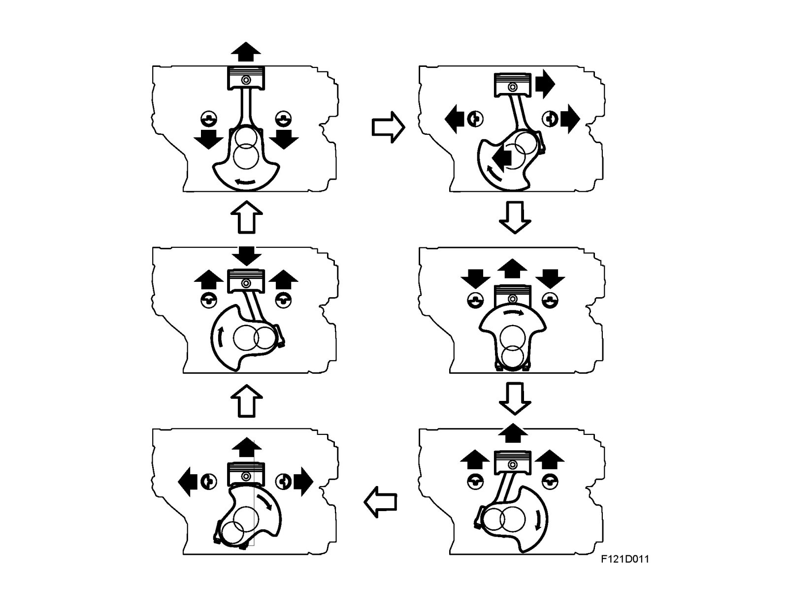
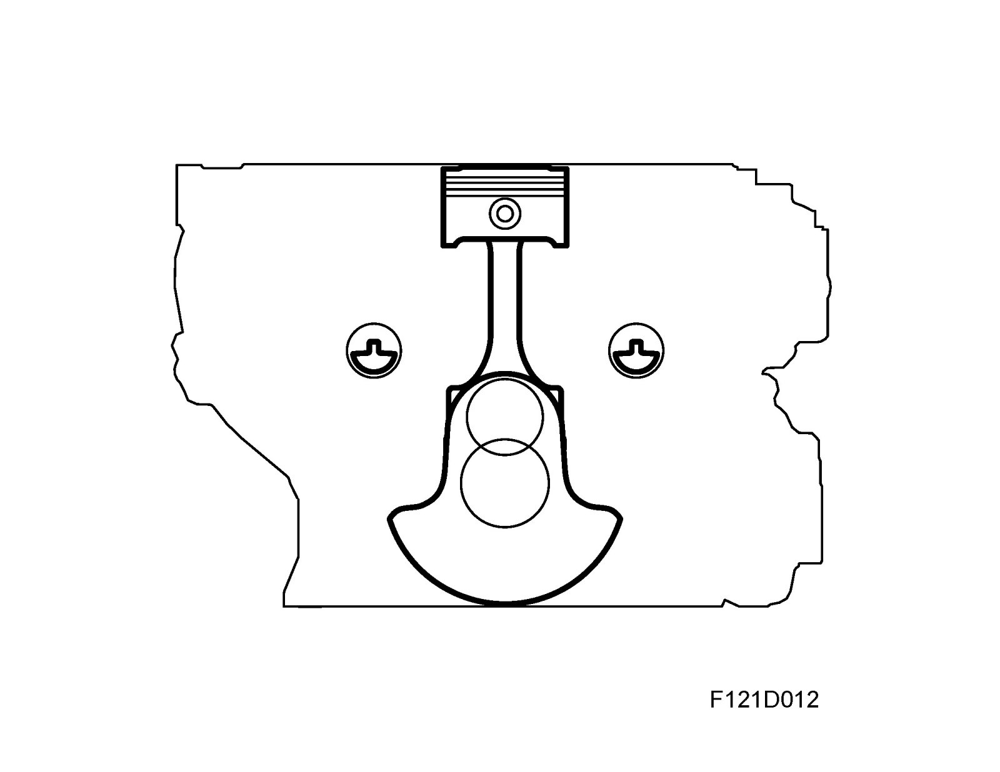
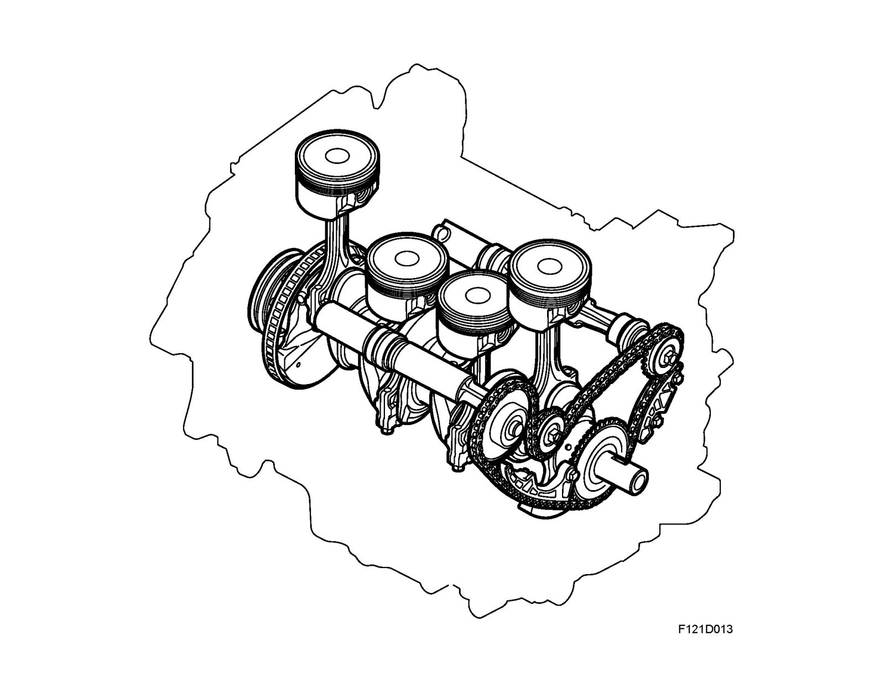

Balancer Shafts
Balancer shaftsEngine vibration
Much effort is put into improving the comfort for driver and passenger. Two areas that this affects are engine vibration and noise, both the result of the basic engine design. Combustion of fuel, where chemical energy is transformed into mechanical energy, creates gas forces that act on the piston crowns. The reciprocating motion of the pistons and connecting rods create inertial forces that make the engine vibrate in different ways.
At low engine speeds, these gas forces are greater than the inertial forces, while the opposite applies at high engine speeds. The most influential forces arise periodically once or twice per crankshaft revolution and are said to be of the first and second order respectively. Inertial forces of the first order are fully balanced because the crankshaft is balanced and the two pairs of pistons 1-4 and 2-3 turn simultaneously in opposite directions.
Second-order forces acting vertically

The inertia forces are caused by both of the downward moving pistons in a 4-cylinder engine, for a certain crank angle, moving in a longer range than both of the upward moving pistons (the connecting rod lateral movement speeds up the downward piston movement but slows the upward movement.) The upward and downward masses' common centre of gravity positions therefore vary, which leads to upward and downward forces which vary periodically twice per crankshaft rotation and cause the engine to vibrate vertically.
Second-order forces acting laterally
During the power stroke, the piston is pressed against the cylinder walls due to the angle of the connecting rod in relation to the cylinder bore. At higher engine speeds, these inertial forces are much greater, however. It can then be said that the crankshaft pulls down the piston and the angle of the connecting rod in relation to the cylinder bore presses the piston against the cylinder bore, but now in the opposite direction. Regardless of the engine speed, the lateral gas and inertial forces vary periodically twice per crankshaft revolution and make the engine vibrate laterally.

The Saab balancer shaft system
Saab has utilized the principle with balancer shafts to balance the second order inertial forces. Two balancer shafts, located symmetrically and low in the sides of the cylinder block above the centre line of the crankshaft, are provided with eccentric balance weights.
The shafts are chain driven and rotate in opposite directions to each other at twice the speed of the crankshaft. The shaft balance weights are situated so that they eliminate the reciprocal forces from the piston movement described above. Thanks to their vertical location in relation to the centre line of the crankshaft, they also balance lateral forces. The torque created by the balancer shafts is adapted so that lateral gas and inertial forces are counteracted.
An absolute provision for the function of the balancer shafts is that their mounting is precisely positioned. This is why the sprockets for the exhaust and inlet sides are designed differently and are marked accordingly.

Balancer shaft drive
The balancer shafts are chain driven from the crankshaft and the gear ratio of the shaft drive wheels is such that the balancer shafts rotate at twice the speed of the crankshaft. Since the engine is fitted with a dual mass flywheel, the pinion on the crankshaft for the balancer shaft circuit is fitted with a spring-damper hub to absorb the torsional fluctuations that can be generated in the crankshaft by the balancer shaft circuit. This hub is flexible ±5°.
The shaft on the exhaust side rotates in the opposite direction with the water pump pinion acting as an idler wheel. The chain is guided by two fixed chain guides and an adjustable chain guide that is acted on by a tensioner. This chain tensioner operates with an opposing force made by the pressure of oil to limit the tension and thereby minimize chain wear and noise.
The coolant pump is driven by the balancer shaft chain. The pinion is mounted in the timing cover. This further reduces noise. The balancer/water pump chain circuit is inside the camshaft chain circuit.